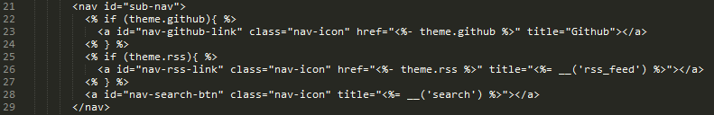
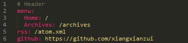
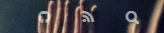
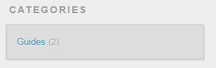
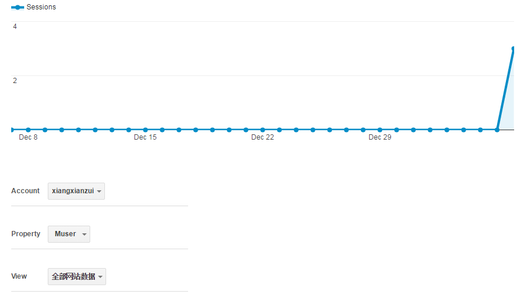

In my previous post, I introduced how to build personal blog site with the help of Hexo and Github Pages. Now it’s time to customize the hexo blog to show some personalities.
_config.yml
_config.yml is the configuration file of your hexo blog (in project root dir).
Hexo lets you define your site information, customize date/time format, pagination behaviour, language settings, etc. Most configs are not necessary, but it will make your site look more like yours if you specify them properly.
Here is my site config:
|
|
Url config:
|
|
Tags & Categories
Tags and Categories can be defined in the front matter of every post you create. Front matter is in the very beginning of your post. You can define tags and categories like this:
|
|
To delete a tag or category, firstly you need to delete it from the front matter of your post, then clean the hexo database (db.json in project root) and /public folder by typing:
|
|
And then, regenerate the database and public folder by typing:
|
|
Asset Folders
As usual, you can reference online images in your markdown like this: . But how to reference local images? Hexo gives you two options.
The first is to create a global asset folder. For example, create /images folder in /source directory, and put all your images into it. Then, you can reference them in this way: .
If you want to put your images according to post, which means one asset folder per post, you can set post_asset_folder to true in _config.yml. And when you $ hexo new post [new-post], an asset folder will be created by hexo automatically.
Enabling Comments
The default theme (landscape) of Hexo already supports Disqus. So, just go to Disqus, register an account, and click install Disqus on site. Follow the guideline, and specify a unique disqus shortname. After that, add this to your _config.yml.
|
|
RSS & Sitemap plugin
Use the official tool hexo-generator-feed to generate RSS feed. Firstly intall it:
|
|
Configure options in _config.yml:
|
|
- type - Feed type. (atom/rss2)
- path - Feed path. (Default: atom.xml/rss2.xml)
- limit - Maximum number of posts in the feed (Use 0 or false to show
all posts) - hub - URL of the PubSubHubbub hubs (Leave it empty if you don’t use
it) - content - (optional) set to ‘true’ to include the contents of the
entire post in the feed.
A atom.xml file will be generated automatically when you run hexo generate.
To generate sitemap, use the official hexo-generator-sitemap plugin.
|
|
–From Google
Customize default theme
Add icons to navigation bar
I will explain how to add icons to the navigation bar in the default theme.
Open directory /themes/landscape/source/css/_partial, and find header.styl. Add following code:
|
|
Then, open directory /themes/landscape/layout/_partial, find header.ejs and open it. Find the following section:

Note: theme is a JavaScript object representation of the theme’s _config.yml
Add the code from line 22 to 24 to your header.ejs.
Finally, open _config.yml in themes/landscape, add code:
|
|
It may looks like this:

Yess! Your navigation bar will look like this:

Change banner
In addition, you can change the banner of the page. The banner.jpg is in /themes/landscape/source/css/images, and you can replace it with your own.
Show category count
Again, open the theme’s _config.yml, set show_count to true.
Then, it will be looking like this:

Google Analytics
Google Analytics tell the site owner about how many people have visited the website, how long they averagely stay and what kind of people visit (male or female? Asian or American?). It is a brilliant tool for site owners to grasp the whole picture.
The default theme, Landscape, is already supporting Google Analytics. If you are using Landscape or another theme which supports Google Analytics, you can simply add your Google Analytics tracking ID (get tracking ID here) to the theme’s _config.yml like this:
|
|
If your theme does not support Google Analytics, check this post.
Until now, you have enabled Google Analytics in your site, but the question is you can’t see it. To display the analytics from Google, you need to use Embed API. This official guide is very helpful. Go through the guide and you’ll make it!
Mine is like this:

Written with StackEdit.